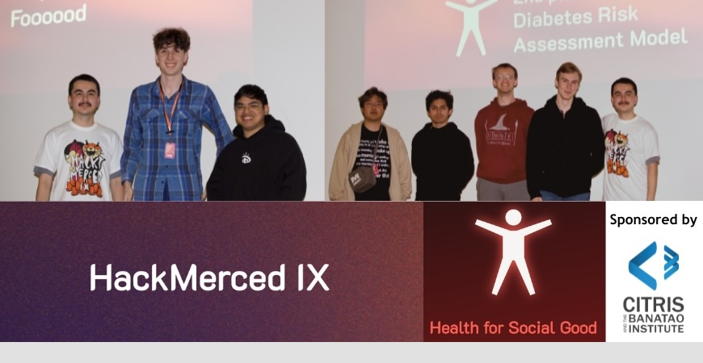

Spotlight on Health Tech for Social Good at Hack Merced IX
April 1, 2024
By: Hanna Bartram, UC Merced
The ninth installment of Hack Merced recently brought together 168 innovators focused on developing technology for the greater good. The Center for Information Technology Research in the Interest of Society (CITRIS) and the Banatao Institute at the University of California, Merced, sponsored the "Health for Social Good" track, highlighting the intersection of technology, health and nutrition.
Team Foood emerged victorious in the "Health for Social Good" track with its groundbreaking image segmentation model. This tool allows users to take a photo of a meal and obtain detailed nutritional insights.
Team Foood's members, Liam Stelly-Hawkes and Julian Balbuena, both third-year computer science and engineering majors, said they spent the first five hours reading papers and brainstorming. "It's crucial to plan before diving into coding."
HackMerced IX proved to be a platform for merging technology with creative solutions to address real-world problems.